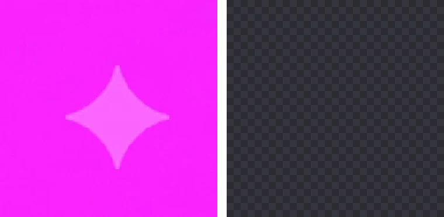

나노바나나 워터마크 제거하고 배경 투명하게 만들기
나노바나나(Gemini)로 단색 배경 이미지를 만들면 오른쪽 아래에 반짝이 모양 마크가 붙습니다. BGPeel은 배경을 지울 때 이 마크도 배경으로 보고 함께 지웁니다.
왜 같이 지워지나요?
이 마크는 배경 위에 반투명한 흰빛을 얹은 모양입니다. BGPeel은 배경색에 흰빛이 섞인 픽셀 중 배경과 이어진 것을 연한 글로우처럼 배경으로 처리하기 때문에, 배경 위에 놓인 마크는 따로 손대지 않아도 배경과 함께 투명해집니다.

사용 방법
- 나노바나나에서 배경색을 지정해 이미지를 만듭니다. 예: “solid magenta (#FF00FF) background”
- BGPeel에 이미지를 끌어다 놓습니다. 여러 장을 한 번에 올려도 됩니다.
- ‘변환 시작’을 누르고 결과를 확인한 뒤 PNG나 zip으로 받습니다.
마크가 남을 때
- 마크가 물체 위에 걸친 경우: 배경과 이어지지 않아 남습니다. 물체가 오른쪽 아래 모서리에서 떨어지도록 여백을 두고 다시 만드는 편이 가장 확실합니다.
- 배경 위에 있는데 흐릿하게 남는 경우: ‘세부 조절’에서 ‘연한 배경 인식’을 올리세요. 너무 올리면 물체의 흰 가장자리까지 지워질 수 있습니다.
알아 둘 점
- 지워지는 것은 눈에 보이는 마크뿐입니다. 이미지 안에 보이지 않게 들어가는 SynthID 같은 식별 정보는 그대로 남습니다.
- 이미지는 서버로 업로드되지 않고 브라우저 안에서만 처리됩니다.
- 배경이 사진처럼 복잡한 이미지는 대상이 아닙니다. 단색 배경으로 만든 이미지에 맞춘 도구입니다.